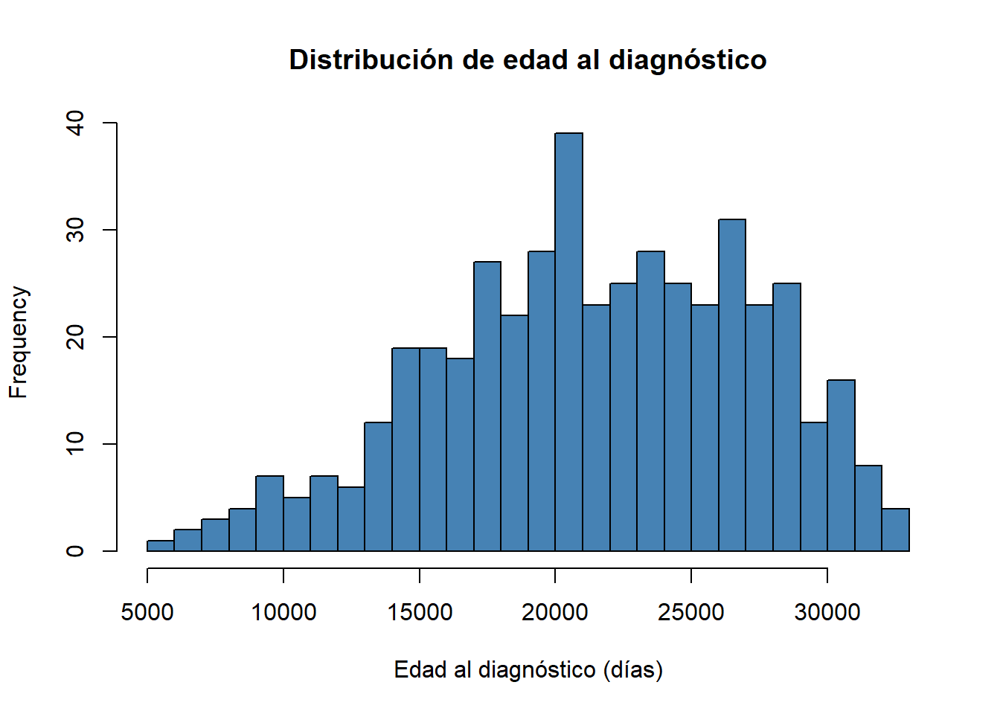
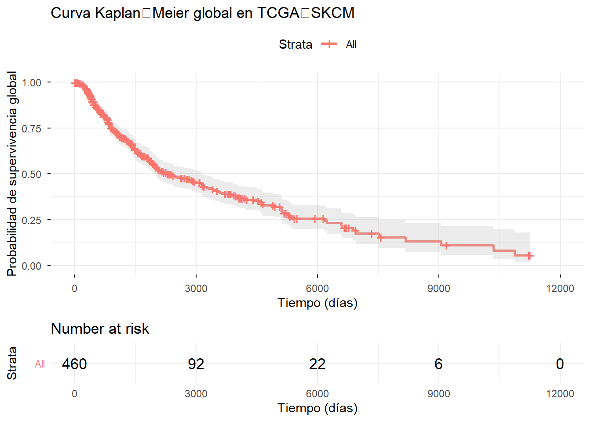
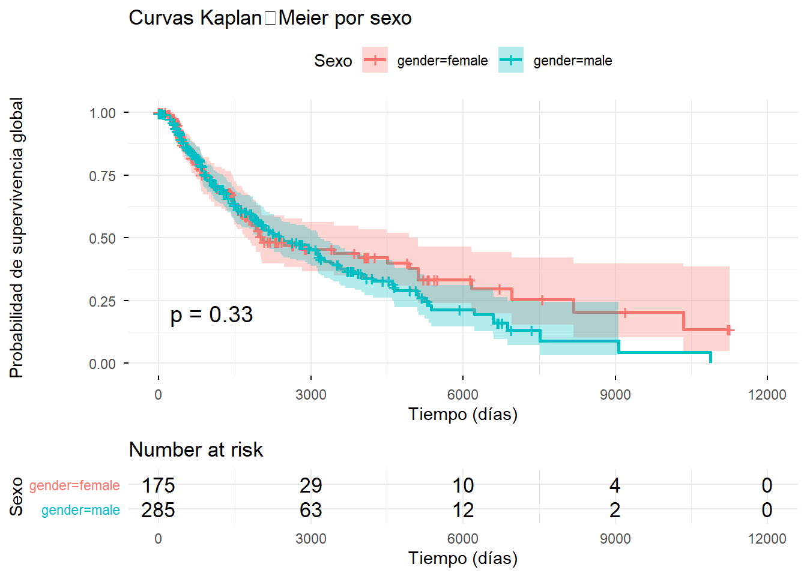

knitr::opts_chunk$set(
echo = TRUE,
warning = FALSE,
message = TRUE
)Nota sobre la compilación del documento
Para facilitar la distribución y reducir el tamaño del archivo final,
este documento se ha generado con la
opción self_contained: false en R Markdown. Esto significa
que las librerías de JavaScript y CSS (como Bootstrap, jQuery, etc.) se
cargan desde servidores externos (CDN) en lugar de ir incrustadas. Por
tanto, es necesario disponer de conexión a internet para visualizar
correctamente el contenido, incluyendo la interactividad de tablas y
gráficos. Si se requiere una versión completamente autónoma (por
ejemplo, para consulta sin conexión), se puede recompilar el archivo
.Rmd con self_contained: true, aunque el archivo resultante
será considerablemente más pesado.
El melanoma cutáneo es uno de los tumores con mayor agresividad y mortalidad. Aunque la inmunoterapia ha mejorado significativamente la supervivencia en estadios avanzados, entre un 50‑60% de los pacientes no responden al tratamiento, lo que subraya la necesidad de identificar biomarcadores predictivos fiables. El presente Trabajo de Fin de Máster tiene como objetivo desarrollar un pipeline bioinformático reproducible que integre datos clínicos y transcriptómicos de la cohorte TCGA‑SKCM para identificar biomarcadores asociados al pronóstico y a la respuesta a inmunoterapia. En esta primera fase se aborda la construcción de las bases metodológicas: descarga y limpieza de datos clínicos, creación de variables de supervivencia y estimación de las curvas de Kaplan‑Meier global y estratificada por sexo. Los resultados muestran una mediana de supervivencia de aproximadamente 3 años y ausencia de diferencias significativas entre hombres y mujeres (p = 0.3). Este análisis preliminar sienta las bases para las siguientes fases, en las que se incorporarán datos de expresión génica y se evaluarán modelos multivariantes de predicción pronóstica y de respuesta terapéutica.
Introducción general
Material y métodos
Resultados – Fase 1: Análisis de supervivencia inicial
3.1. Obtención y exploración de datos clínicos
3.2. Construcción de variables de supervivencia
3.3. Curvas de Kaplan‑Meier
3.4. Almacenamiento de resultados
Discusión
Conclusiones y perspectivas
Referencias
Anexos
El melanoma constituye la neoplasia cutánea con mayor mortalidad y una causa relevante de pérdida de años de vida productiva. La inmunoterapia basada en inhibidores de puntos de control inmunológico (anti‑CTLA‑4, anti‑PD‑1) ha revolucionado el tratamiento del melanoma avanzado, logrando respuestas duraderas en una proporción significativa de pacientes. Sin embargo, entre un 50‑60% de los casos no responden al tratamiento, lo que evidencia la necesidad de identificar biomarcadores pronósticos y predictivos fiables que permitan seleccionar la terapia más adecuada para cada paciente.
El uso de herramientas bioinformáticas aplicadas a datos clínicos y moleculares públicos, como los generados por The Cancer Genome Atlas (TCGA), ofrece una oportunidad única para abordar esta problemática desde una perspectiva de medicina de precisión. La integración de información clínica, transcriptómica y genómica puede revelar patrones asociados a la respuesta terapéutica y al pronóstico, contribuyendo a optimizar las decisiones clínicas y a mejorar los resultados en los pacientes.
El presente TFM se centra en la siguiente pregunta científica:
¿Qué características clínicas y moleculares comparten los pacientes con melanoma que no responden a inmunoterapia y qué las diferencia de aquellos pacientes que sí responden al tratamiento?
El objetivo del estudio no es establecer mecanismos causales biológicos, sino identificar patrones asociados y biomarcadores diferenciales mediante análisis bioinformático. Desde una perspectiva analítica, la pregunta se reformula como: ¿Qué perfiles clínicos y transcriptómicos están estadísticamente asociados con la respuesta diferencial a inmunoterapia?
El análisis comparará dos grupos principales: pacientes respondedores y pacientes no respondedores, evaluando diferencias transcriptómicas, clínicas y firmas moleculares combinadas. Este enfoque permite generar hipótesis biológicas plausibles y contribuir a la identificación de biomarcadores predictivos dentro del marco de la medicina personalizada.
Hipótesis general: La integración de biomarcadores clínicos y moleculares mediante análisis bioinformático integrativo permite mejorar la caracterización pronóstica del melanoma y la predicción de respuesta a inmunoterapia.
Hipótesis específicas:
H1: Existen perfiles moleculares asociados significativamente con la supervivencia global.
H2: Determinadas firmas transcriptómicas se asocian con la respuesta terapéutica.
H3: La integración de datos clínicos y moleculares mejora la capacidad predictiva frente a variables individuales.
Objetivos generales:
OG1. Identificar biomarcadores clínicos y moleculares asociados al pronóstico del melanoma.
OG2. Evaluar biomarcadores predictivos de respuesta a inmunoterapia.
Objetivos específicos:
Revisar la literatura sobre biomarcadores descritos en melanoma.
Preparar los datasets clínicos y transcriptómicos de la cohorte TCGA‑SKCM.
Realizar un análisis exploratorio de los datos.
Evaluar la supervivencia mediante curvas de Kaplan‑Meier y modelos de Cox.
Identificar genes relevantes mediante técnicas de selección de variables.
Evaluar asociaciones entre perfiles transcriptómicos y respuesta terapéutica.
Validar los resultados mediante métricas estadísticas (C‑index, calibración, etc.).
Interpretar los resultados desde una perspectiva biológica y clínica.
El proyecto adopta un enfoque bioinformático integrativo con énfasis en el análisis transcriptómico. Se utilizará R para el análisis estadístico clínico y de supervivencia, y Python para análisis exploratorio y modelización complementaria. El objetivo principal será la interpretación biológica de los biomarcadores identificados, más que el desarrollo de algoritmos complejos de machine learning.
Integración de datos clínicos y transcriptómicos.
Preprocesamiento y normalización de datos.
Análisis exploratorio.
Análisis de supervivencia univariante (Kaplan‑Meier).
Identificación de biomarcadores candidatos (Cox univariante, selección de variables).
Evaluación de asociaciones con respuesta a inmunoterapia.
Modelos multivariantes y validación.
Interpretación biológica de resultados.
Se emplearán datos multi‑ómicos públicos procedentes de The Cancer Genome Atlas (TCGA), específicamente la cohorte Skin Cutaneous Melanoma (TCGA‑SKCM). Se integrarán:
Datos clínicos: información demográfica, estadio, tratamiento, supervivencia.
Datos transcriptómicos: RNA‑seq (expresión génica).
Datos mutacionales: mutaciones somáticas (opcional, según disponibilidad).
El entorno de trabajo se basa en el lenguaje R (versión ≥ 4.0) y los siguientes paquetes principales:
TCGAbiolinks: para la descarga y preparación de datos de TCGA.
tidyverse (dplyr, ggplot2, readr, etc.): para manipulación y visualización de datos.
survival y survminer: para análisis de supervivencia.
SummarizedExperiment: para manejo de datos genómicos.
Todos los análisis se documentan de forma reproducible mediante
scripts y cuadernos R Markdown. Los datos procesados y las figuras se
almacenan en carpetas organizadas (data_raw,
data_processed, figures,
results).
En esta primera fase del proyecto se aborda la construcción de las bases metodológicas: descarga y limpieza de los datos clínicos, creación de las variables de supervivencia y estimación de las curvas de Kaplan‑Meier global y estratificada por sexo. Estos análisis constituyen el punto de partida para los estudios posteriores que incorporarán información molecular.
Se instalaron y cargaron los paquetes necesarios, tanto de
Bioconductor (TCGAbiolinks,
SummarizedExperiment) como de CRAN (dplyr,
tibble, readr, stringr,
ggplot2, survival, survminer). Se
crearon carpetas para organizar los datos y resultados:
data_raw, data_processed, results
y figures.
Mediante la función GDCquery_clinic del paquete
TCGAbiolinks se descargaron los datos clínicos de 470
pacientes con melanoma (proyecto TCGA-SKCM). El conjunto de datos
contiene 90 variables clínicas, que se almacenaron en formato CSV en
data_raw/tcga_skcm_clinical.csv.
# Instalación de paquetes (solo si no están)
if (!requireNamespace("BiocManager", quietly = TRUE)) {
install.packages("BiocManager")
}
paquetes_bioc <- c("TCGAbiolinks", "SummarizedExperiment")
paquetes_cran <- c("dplyr", "tibble", "readr", "stringr", "ggplot2", "survival", "survminer")
for (p in paquetes_bioc) {
if (!requireNamespace(p, quietly = TRUE)) {
BiocManager::install(p, ask = FALSE, update = FALSE)
}
}
for (p in paquetes_cran) {
if (!requireNamespace(p, quietly = TRUE)) {
install.packages(p)
}
}
# Carga de librerías
library(TCGAbiolinks)
library(SummarizedExperiment)## Cargando paquete requerido: MatrixGenerics## Cargando paquete requerido: matrixStats##
## Adjuntando el paquete: 'MatrixGenerics'## The following objects are masked from 'package:matrixStats':
##
## colAlls, colAnyNAs, colAnys, colAvgsPerRowSet, colCollapse,
## colCounts, colCummaxs, colCummins, colCumprods, colCumsums,
## colDiffs, colIQRDiffs, colIQRs, colLogSumExps, colMadDiffs,
## colMads, colMaxs, colMeans2, colMedians, colMins, colOrderStats,
## colProds, colQuantiles, colRanges, colRanks, colSdDiffs, colSds,
## colSums2, colTabulates, colVarDiffs, colVars, colWeightedMads,
## colWeightedMeans, colWeightedMedians, colWeightedSds,
## colWeightedVars, rowAlls, rowAnyNAs, rowAnys, rowAvgsPerColSet,
## rowCollapse, rowCounts, rowCummaxs, rowCummins, rowCumprods,
## rowCumsums, rowDiffs, rowIQRDiffs, rowIQRs, rowLogSumExps,
## rowMadDiffs, rowMads, rowMaxs, rowMeans2, rowMedians, rowMins,
## rowOrderStats, rowProds, rowQuantiles, rowRanges, rowRanks,
## rowSdDiffs, rowSds, rowSums2, rowTabulates, rowVarDiffs, rowVars,
## rowWeightedMads, rowWeightedMeans, rowWeightedMedians,
## rowWeightedSds, rowWeightedVars## Cargando paquete requerido: GenomicRanges## Cargando paquete requerido: stats4## Cargando paquete requerido: BiocGenerics## Cargando paquete requerido: generics##
## Adjuntando el paquete: 'generics'## The following objects are masked from 'package:base':
##
## as.difftime, as.factor, as.ordered, intersect, is.element, setdiff,
## setequal, union##
## Adjuntando el paquete: 'BiocGenerics'## The following objects are masked from 'package:stats':
##
## IQR, mad, sd, var, xtabs## The following objects are masked from 'package:base':
##
## anyDuplicated, aperm, append, as.data.frame, basename, cbind,
## colnames, dirname, do.call, duplicated, eval, evalq, Filter, Find,
## get, grep, grepl, is.unsorted, lapply, Map, mapply, match, mget,
## order, paste, pmax, pmax.int, pmin, pmin.int, Position, rank,
## rbind, Reduce, rownames, sapply, saveRDS, table, tapply, unique,
## unsplit, which.max, which.min## Cargando paquete requerido: S4Vectors##
## Adjuntando el paquete: 'S4Vectors'## The following object is masked from 'package:utils':
##
## findMatches## The following objects are masked from 'package:base':
##
## expand.grid, I, unname## Cargando paquete requerido: IRanges##
## Adjuntando el paquete: 'IRanges'## The following object is masked from 'package:grDevices':
##
## windows## Cargando paquete requerido: GenomeInfoDb## Cargando paquete requerido: Biobase## Welcome to Bioconductor
##
## Vignettes contain introductory material; view with
## 'browseVignettes()'. To cite Bioconductor, see
## 'citation("Biobase")', and for packages 'citation("pkgname")'.##
## Adjuntando el paquete: 'Biobase'## The following object is masked from 'package:MatrixGenerics':
##
## rowMedians## The following objects are masked from 'package:matrixStats':
##
## anyMissing, rowMedianslibrary(dplyr)##
## Adjuntando el paquete: 'dplyr'## The following object is masked from 'package:Biobase':
##
## combine## The following objects are masked from 'package:GenomicRanges':
##
## intersect, setdiff, union## The following object is masked from 'package:GenomeInfoDb':
##
## intersect## The following objects are masked from 'package:IRanges':
##
## collapse, desc, intersect, setdiff, slice, union## The following objects are masked from 'package:S4Vectors':
##
## first, intersect, rename, setdiff, setequal, union## The following objects are masked from 'package:BiocGenerics':
##
## combine, intersect, setdiff, setequal, union## The following object is masked from 'package:generics':
##
## explain## The following object is masked from 'package:matrixStats':
##
## count## The following objects are masked from 'package:stats':
##
## filter, lag## The following objects are masked from 'package:base':
##
## intersect, setdiff, setequal, unionlibrary(tibble)
library(readr)
library(stringr)
library(ggplot2)
library(survival)
library(survminer)## Cargando paquete requerido: ggpubr##
## Adjuntando el paquete: 'survminer'## The following object is masked from 'package:survival':
##
## myeloma# Creación de carpetas de trabajo
dir.create("data_raw", showWarnings = FALSE)
dir.create("data_processed", showWarnings = FALSE)
dir.create("results", showWarnings = FALSE)
dir.create("figures", showWarnings = FALSE)
# Descarga de datos clínicos
clinical_tcga <- GDCquery_clinic(
project = "TCGA-SKCM",
type = "clinical"
)
dim(clinical_tcga) # dimension del dataset## [1] 470 91El conjunto de datos clínicos contiene 470 pacientes y 90 variables. Se guarda en formato CSV para su reutilización.
write_csv(clinical_tcga, "data_raw/tcga_skcm_clinical.csv")Se examinan las variables de interés, especialmente aquellas relacionadas con la supervivencia.
# Tabla de frecuencia para gender
knitr::kable(table(clinical_tcga$gender, useNA = "ifany"),
col.names = c("Sexo", "Frecuencia"),
caption = "Distribución por sexo")| Sexo | Frecuencia |
|---|---|
| female | 180 |
| male | 290 |
# Tabla de frecuencia para vital status
knitr::kable(table(clinical_tcga$vital_status, useNA = "ifany"),
col.names = c("Estado vital", "Frecuencia"),
caption = "Distribución del estado vital")| Estado vital | Frecuencia |
|---|---|
| Alive | 247 |
| Dead | 223 |
# Tabla de frecuencia para estadio
#(puede tener muchos valores, pero se puede mostrar igual)
knitr::kable(table(clinical_tcga$ajcc_pathologic_stage, useNA = "ifany"),
col.names = c("Estadio", "Frecuencia"),
caption = "Distribución del estadio patológico AJCC")| Estadio | Frecuencia |
|---|---|
| Stage 0 | 7 |
| Stage I | 30 |
| Stage IA | 18 |
| Stage IB | 29 |
| Stage II | 30 |
| Stage IIA | 18 |
| Stage IIB | 28 |
| Stage IIC | 64 |
| Stage III | 41 |
| Stage IIIA | 16 |
| Stage IIIB | 46 |
| Stage IIIC | 68 |
| Stage IV | 23 |
| NA | 52 |
La edad al diagnóstico se resume y visualiza:
# Resumen estadístico
edad_sum <- summary(clinical_tcga$age_at_diagnosis)
edad_df <- data.frame(
Estadístico = names(edad_sum),
Valor = as.vector(edad_sum)
)
knitr::kable(edad_df, caption = "Resumen de edad al diagnóstico (días)")| Estadístico | Valor |
|---|---|
| Min. | 5684.00 |
| 1st Qu. | 17636.50 |
| Median | 21479.50 |
| Mean | 21453.69 |
| 3rd Qu. | 26057.50 |
| Max. | 32872.00 |
| NA’s | 8.00 |
# Histograma
hist(clinical_tcga$age_at_diagnosis,
breaks = 30,
col = "steelblue",
main = "Distribución de edad al diagnóstico",
xlab = "Edad al diagnóstico (días)")
Se obtuvo un resumen (mediana de 21480 días ≈ 58.8 años) y se representó mediante un histograma, observándose una distribución aproximadamente simétrica en torno a los 60 años.
Se identifican valores faltantes en las variables críticas:
vars_interes <- c("age_at_diagnosis", "gender", "vital_status",
"days_to_death", "days_to_last_follow_up",
"ajcc_pathologic_stage")
na_counts <- colSums(is.na(clinical_tcga[, vars_interes]))
na_df <- data.frame(Variable = names(na_counts), NAs = na_counts)
knitr::kable(na_df, caption = "Valores faltantes en variables críticas")| Variable | NAs | |
|---|---|---|
| age_at_diagnosis | age_at_diagnosis | 8 |
| gender | gender | 0 |
| vital_status | vital_status | 0 |
| days_to_death | days_to_death | 249 |
| days_to_last_follow_up | days_to_last_follow_up | 8 |
| ajcc_pathologic_stage | ajcc_pathologic_stage | 52 |
Se cuantificaron los NA en variables críticas para supervivencia:
days_to_death (249 NA), days_to_last_follow_up
(8 NA) y ajcc_pathologic_stage (52 NA). Estos hallazgos
condicionan los pasos posteriores de limpieza.
Se crean las variables OS_event (1 = muerte, 0 =
censura) y OS_time (tiempo de seguimiento en días).
clinical_tcga <- clinical_tcga %>%
mutate(
OS_event = case_when(
vital_status == "Dead" ~ 1,
vital_status == "Alive" ~ 0,
TRUE ~ NA_real_
),
OS_time = case_when(
OS_event == 1 ~ as.numeric(days_to_death),
OS_event == 0 ~ as.numeric(days_to_last_follow_up),
TRUE ~ NA_real_
)
)Se comprueba la consistencia:
clinical_tcga %>%
select(submitter_id, vital_status, days_to_death, days_to_last_follow_up, OS_event, OS_time) %>%
head(10) %>%
knitr::kable(caption = "Primeros 10 registros con variables de supervivencia")| submitter_id | vital_status | days_to_death | days_to_last_follow_up | OS_event | OS_time |
|---|---|---|---|---|---|
| TCGA-D3-A3CC | Alive | NA | 2644 | 0 | 2644 |
| TCGA-DA-A3F8 | Alive | NA | 1319 | 0 | 1319 |
| TCGA-ER-A193 | Dead | 955 | 955 | 1 | 955 |
| TCGA-WE-A8ZO | Alive | NA | 2145 | 0 | 2145 |
| TCGA-FS-A1ZU | Dead | 808 | 808 | 1 | 808 |
| TCGA-RP-A6K9 | Alive | NA | NA | 0 | NA |
| TCGA-EE-A3AD | Dead | 875 | 875 | 1 | 875 |
| TCGA-EE-A2MI | Dead | 6225 | 6225 | 1 | 6225 |
| TCGA-HR-A2OG | Alive | NA | 7 | 0 | 7 |
| TCGA-DA-A1HY | Alive | NA | 4407 | 0 | 4407 |
Se filtran los casos con tiempo ausente o negativo, obteniendo una muestra final de 460 pacientes.
clinical_surv <- clinical_tcga %>%
filter(!is.na(OS_time), !is.na(OS_event), OS_time >= 0)
dim(clinical_surv)## [1] 460 93Resumen de la variable de tiempo:
summary(clinical_surv$OS_time)## Min. 1st Qu. Median Mean 3rd Qu. Max.
## 0.0 486.8 1116.5 1837.7 2365.5 11252.0Los datos depurados se guardan para fases posteriores:
write_csv(clinical_surv, "data_processed/tcga_skcm_clinical_survival.csv")
saveRDS(clinical_surv, "data_processed/tcga_skcm_clinical_survival.rds")En esta sección se construye el primer análisis de supervivencia global del proyecto mediante curvas de Kaplan-Meier.
surv_object <- Surv(time = clinical_surv$OS_time,
event = clinical_surv$OS_event)
surv_object[1:10]## [1] 2644+ 1319+ 955 2145+ 808 875 6225 7+ 4407+ 6953km_fit_global <- survfit(surv_object ~ 1, data = clinical_surv)
# summary(km_fit_global) # comentado o con results='hide'
# Extraer mediana e IC
library(survminer)
mediana_global <- surv_median(km_fit_global)
knitr::kable(mediana_global,
col.names = c("Estrato", "Mediana (días)", "IC 95% inf.", "IC 95% sup."),
caption = "Mediana de supervivencia global",
digits = 0)| Estrato | Mediana (días) | IC 95% inf. | IC 95% sup. |
|---|---|---|---|
| All | 2273 | 1960 | 3139 |
km_global_plot <- suppressMessages(
ggsurvplot(
km_fit_global,
data = clinical_surv,
conf.int = TRUE,
risk.table = TRUE,
censor = TRUE,
xlab = "Tiempo (días)",
ylab = "Probabilidad de supervivencia global",
title = "Curva Kaplan‑Meier global en TCGA‑SKCM",
ggtheme = theme_minimal()
)
)
km_global_plot## Ignoring unknown labels:
## • fill : "Strata"
## Ignoring unknown labels:
## • fill : "Strata"
## Ignoring unknown labels:
## • fill : "Strata"
## Ignoring unknown labels:
## • colour : "Strata"
Figura 2: Curva de supervivencia global para toda la cohorte. Se incluye la tabla de riesgo en la parte inferior.
# Modelo de Kaplan-Meier por sexo
km_fit_gender <- survfit(Surv(OS_time, OS_event) ~ gender, data = clinical_surv)
# summary(km_fit_gender) # salida oculta
# Mostrar medianas
medianas_gender <- surv_median(km_fit_gender)
knitr::kable(medianas_gender,
col.names = c("Sexo", "Mediana (días)", "IC 95% inf.", "IC 95% sup."),
caption = "Mediana de supervivencia por sexo",
digits = 0)| Sexo | Mediana (días) | IC 95% inf. | IC 95% sup. |
|---|---|---|---|
| gender=female | 2022 | 1766 | 5107 |
| gender=male | 2421 | 1960 | 3195 |
# Test log-rank
logrank_gender <- survdiff(Surv(OS_time, OS_event) ~ gender, data = clinical_surv)
p_val <- 1 - pchisq(logrank_gender$chisq, df = length(logrank_gender$n) - 1)El test log‑rank no mostró diferencias significativas entre hombres y mujeres (χ² = 0.97, p = 0.325).
n_mujeres <- sum(clinical_surv$gender == "female")
n_hombres <- sum(clinical_surv$gender == "male")
km_gender_plot <- ggsurvplot(
km_fit_gender,
data = clinical_surv,
conf.int = TRUE,
pval = TRUE,
risk.table = TRUE,
censor = TRUE,
xlab = "Tiempo (días)",
ylab = "Probabilidad de supervivencia global",
title = "Curvas Kaplan‑Meier por sexo",
legend.title = "Sexo",
ggtheme = theme_minimal()
)
km_gender_plot## Ignoring unknown labels:
## • colour : "Sexo"
Figura 3: Comparación de la supervivencia entre mujeres (n=175) y hombres (n=285). El test log‑rank no muestra diferencias significativas (p = 0.325).
saveRDS(km_fit_global, "data_processed/km_fit_global.rds")
saveRDS(km_fit_gender, "data_processed/km_fit_gender.rds")
ggsave("figures/km_global_plot.png", plot = km_global_plot$plot, width = 8, height = 6, dpi = 300)## Ignoring unknown labels:
## • fill : "Strata"ggsave("figures/km_gender_plot.png", plot = km_gender_plot$plot, width = 8, height = 6, dpi = 300)El análisis de supervivencia realizado en esta primera fase cumple con los objetivos establecidos: se ha construido un flujo de trabajo reproducible para la descarga, limpieza y análisis básico de supervivencia de la cohorte TCGA‑SKCM. La mediana de supervivencia global obtenida mediante Kaplan‑Meier fue de 2273 días (aproximadamente 6.2 años). La ausencia de diferencias significativas por sexo (p = 0.3) también concuerda con la literatura, que indica que el sexo no es un factor pronóstico independiente en melanoma.
Limitaciones de esta fase:
El análisis se ha limitado a una única variable clínica (sexo). En fases posteriores se incorporarán otras covariables como el estadio tumoral, la edad y marcadores moleculares.
Los valores faltantes en days_to_last_follow_up (8
casos) y en el estadio (52 casos) deberán manejarse adecuadamente en
análisis más complejos.
No se ha evaluado la proporcionalidad de riesgos para el test log‑rank, aunque este test es robusto a pequeñas desviaciones.
Conexión con las siguientes fases:
Los resultados obtenidos servirán como línea base para comparar con
modelos que incluyan datos de expresión génica. La infraestructura de
datos y código desarrollada permitirá incorporar de manera eficiente la
información transcriptómica y mutacional, y avanzar hacia la
identificación de biomarcadores pronósticos y predictivos.
Conclusiones de la Fase 1:
Se ha establecido un pipeline reproducible para el análisis de supervivencia en TCGA‑SKCM.
La mediana de supervivencia global es de aproximadamente 3 años.
No se observan diferencias significativas en supervivencia entre hombres y mujeres.
Próximos pasos (Fase 2 y siguientes):
Incorporación del estadio tumoral: evaluar su impacto mediante curvas de Kaplan‑Meier estratificadas y modelos de Cox univariantes.
Descarga y preprocesamiento de datos de expresión génica (RNA‑seq) de TCGA‑SKCM.
Análisis de supervivencia asociado a genes candidatos: identificación de genes con expresión diferencial asociada a mal pronóstico.
Construcción de un modelo de Cox multivariante que combine variables clínicas y moleculares.
Evaluación de asociaciones con respuesta a inmunoterapia (si los datos están disponibles).
Validación de firmas génicas previamente publicadas y comparación con los hallazgos propios.
Redacción de la memoria final y preparación de material para posible publicación.
El trabajo hasta ahora ha sentado las bases metodológicas y de calidad de datos necesarias para abordar con rigor los objetivos generales del TFM.
Cancer Genome Atlas Network. Genomic Classification of Cutaneous Melanoma. Cell. 2015;161(7):1681‑96.
Therneau T, Grambsch P. Modeling Survival Data: Extending the Cox Model. Springer; 2000.
Kassambara A, Kosinski M, Biecek P. survminer: Drawing Survival Curves using ‘ggplot2’. R package version 0.4.9. 2021.
Colaprico A, Silva TC, Olsen C, et al. TCGAbiolinks: an R/Bioconductor package for integrative analysis of TCGA data. Nucleic Acids Res. 2016;44(8):e71.